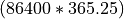

User Guide¶
Guide to users!
Configuring an input YAML file¶
The configuration for a pyDeltaRCM run is set up by a parameter set, described in the YAML markup format.
To configure a run, you should create a file called, for example, run_parameters.yml.
Inside this file you can specify parameters for your run, with each parameter on a new line. For example, if run_parameters.yml contained the line:
S0: 0.005
seed: 42
then a DeltaModel model instance initialized with this file specified as input_file will have a slope of 0.005, and will use a random seed of 42.
Multiple parameters can be specified line by line.
Default values are substituted for any parameter not explicitly given in the input_file .yml file.
Default values of the YAML configuration are listed in the Default Model Variable Values.
Starting model runs¶
There are two API levels at which you can interact with the pyDeltaRCM model. There is a “high-level” model API, which takes as argument a YAML configuration file, and will compose a list of jobs as indicated in the YAML file; the setup can be configured to automatically execute the job list, as well. The “low-level” API consists of creating a model instance from a YAML configuration file and manually handling the timestepping, or optionally, augmenting operations of the model to implement new features.
High-level model API¶
The high-level API is accessed via either a shell prompt or python script, and handles setting up the model configuration and running the model a specified duration.
For the following high-level API demonstrations, consider a YAML input file named model_configuration.yml which looks like:
Length: 5000
Width: 2000
timesteps: 500
Command line API¶
To invoke a model run from the command line using the YAML file model_configuration.yml defined above,
we would simply call:
pyDeltaRCM --config model_configuration.yml
or equivalently:
python -m pyDeltaRCM --config model_configuration.yml
These invocations will run the pyDeltaRCM preprocessor with the parameters specified in the model_configuration.yml file.
If the YAML configuration indicates multiple jobs (via matrix expansion or ensemble specification), the jobs will each be run automatically by calling update on the model 500 times.
Python API¶
The Python high-level API is accessed via the Preprocessor object.
First, the Preprocessor is instantiated with a YAML configuration file (e.g., model_configuration.yml):
>>> pp = preprocessor.Preprocessor(p)
which returns an object containing the list of jobs to run. Jobs are then run with:
>>> pp.run_jobs()
Model simulation duration in the high-level API¶
The duration of a model run configured with the high-level API can be set up with a number of different configuration parameters.
Note
see the complete description of “time” in the model: Time in pyDeltaRCM.
Using the high-level API, you can specify the duration to run the model by two mechanisms: 1) the number of timesteps to run the model, or 2) the duration of time to run the model.
The former case is straightforward, insofar that the model determines the timestep duration and the high-level API simply iterates for the specified number of timestep iterations.
To specify the number of timesteps to run the model, use the argument --timesteps at the command line (or timesteps: in the configuration YAML file, or timesteps= with the Python Preprocessor).
pyDeltaRCM --config model_configuration.yml --timesteps 5000
The second case is more complicated, because the time specification is converted to model time according to a set of additional parameters. In this case, the model run end condition is that the elapsed model time is equal to or greater than the specified input time. Importantly, this means that the duration of the model run is unlikely to exactly match the input condition, because the model timestep is unlikely to be a factor of the specified time. Again, refer to the complete description of model time Time in pyDeltaRCM for more information.
To specify the duration of time to run the model in seconds, simply use the argument --time at the command line (or time: in the configuration YAML file, or time= with the Python Preprocessor).
It is also possible to specify the input run duration in units of years with the similarly named argument --time_years (time_years:, time_years=).
pyDeltaRCM --config model_configuration.yml --time 31557600
pyDeltaRCM --config model_configuration.yml --time_years 1
would each run a simulation for  seconds, or 1 year.
Important
Do not specify both time arguments, or specify time arguments with the timesteps argument. In the case of multiple argument specification, precedence is given in the order timesteps > time > time_years.
When specifying the time to run the simulation, an additional parameter determining the intermittency factor ( ) may be specified
) may be specified --If at the command line (If: in the YAML configuration file, If= with the Python Preprocessor).
This argument will scale the specified time-to-model-time, such that the scaled time is equal to the input argument time.
Specifying the value is essential when using the model duration run specifications.
See Time in pyDeltaRCM for complete information on the scaling between model time and elapsed simulation time.
Running simulations in parallel¶
The high-level API provides the ability to run simulations in parallel on Linux environments. This option is only useful in the case where you are running multiple jobs with the matrix expansion, ensemble expansion, or set expansion tools.
To run jobs in parallel simply specify the –parallel flag to the command line interface. Optionally, you can specify the number of simulations to run at once by following the flag with a number.
pyDeltaRCM --config model_configuration.yml --timesteps 5000 --parallel
pyDeltaRCM --config model_configuration.yml --timesteps 5000 --parallel 6
Low-level model API¶
Interact with the model by creating your own script, and manipulating model outputs at the desired level. The simplest case to use the low-level API is to do
>>> delta = DeltaModel(input_file='model_configuration.yml')
>>> for _ in range(0, 1):
... delta.update()
>>> delta.finalize()
However, you can also inspect/modify the update method, and change the order of operations, or add operations, as desired.
If you are working with the low-level API, you can optionally pass any valid key in the YAML configuration file as a keyword argument during model instantiation.
For example:
>>> delta = DeltaModel(input_file='model_configuration.yml',
... SLR=1e-9)
Keyword arguments supplied at this point will supersede values specified in the YAML configuration.
Advanced model configurations¶
Configuring multiple model runs from a single YAML file¶
Multiple model runs (referred to as “jobs”) can be configured by a single .yml configuration file, by using the matrix and ensemble configuration keys.
Matrix expansion¶
To use matrix expansion to configure multiple model runs, the dimensions of the matrix (i.e., the variables you want to run) should be listed below the matrix key. For example, the following configuration is a one-dimensional matrix with the variable f_bedload:
out_dir: 'out_dir'
dx: 2.0
h0: 1.0
matrix:
f_bedload:
- 0.5
- 0.2
This configuation would produce two model runs, one with bedload fraction (f_bedload) 0.5 and another with bedload fraction 0.2, and both with grid spacing (dx) 2.0 and basin depth (h0) 1.0. The matrix expansions will create two folders at ./out_dir/job_000 and ./out_dir/job_001 that each correspond to a created job. Each folder will contain a copy of the configuration file used for that job; for example, the full configuration for job_000 is:
out_dir: 'out_dir/job_000'
dx: 2.0
h0: 1.0
f_bedload: 0.5
Additionally, a log file for each job is located in the output folder, and any output grid files or images specified by the input configuration will be located in the respective job output folder.
Note
You must specify the out_dir key in the input YAML configuation to use matrix expansion.
Multiple dimensional matrix expansion is additionally supported. For example, the following configuation produces six jobs:
out_dir: 'out_dir'
matrix:
f_bedload:
- 0.5
- 0.4
- 0.2
h0:
- 1
- 5
Ensemble expansion¶
Ensemble expansion creates replicates of specified model configurations with different random seed values. Like the matrix expansion, the out_dir key must be specified in the input configuration file. The ensemble key can be added to any configuration file that does not explicitly define the random seed. As an example, two model runs can be generated with the same input sediment fraction using the following configuration .yml:
out_dir: 'out_dir'
f_bedload: 0.5
ensemble: 2
This configuration file would produce two model runs that share the same parameters, but have different initial random seed values. The ensemble expansion can be applied to configuration files that include a matrix expansion as well:
out_dir: 'out_dir'
ensemble: 3
matrix:
h0:
- 1.0
- 2.0
The above configuration file would produce 6 model runs, 3 with a basin depth (h0) of 1.0, and 3 with a basin depth of 2.0.
Set expansion¶
Set expansion enables user-configured parameter sets to take advantage of the Preprocessor infrastructure (such as the job output preparation and ability to run jobs in parallel), while also enabling flexible configurations for parameter sets than cannot be configured via matrix expansion.
For example, to vary Qw0 while holding Qs0 fixed requires modifying both C0_percent and some water-discharge-controlling parameter simultaneously; i.e., this cannot be achieved with matrix expansion.
To use set expansion, add the set key to a configuration file, and define a list of dictionaries which set the parameters of each run to be completed.
For example, to configure two model runs, the first with parameters u0: 1.0 and h0: 1.0, and the second with parameters u0: 1.2 and h0: 1.2:
set:
- {u0: 1.0, h0: 1.0}
- {u0: 1.2., h0: 1.2}
All jobs in the set specification must have the exact same set of keys. Moreover, additional ensemble or matrix specifications are not supported with the set specification.
Working with subsidence¶
What is subsidence anyway? Subsidence is basically the downward vertical movement of the ground. There are many direct and indirect causes of subsidence, check out the Wikipedia page to get an overview.
Turning on Subsidence in pyDeltaRCM¶
To configure a pyDeltaRCM model with subsidence, the yaml parameter,
toggle_subsidence must be set to True.
Configuring Lateral Extents of Subsidence¶
There are two yaml parameters associated with the lateral extents of the
subsiding region in pyDeltaRCM: theta1 and theta2. theta1 is
specified in radians and represents the left boundary of the subsiding region.
The angle in radians is expressed relative to a datum aligned with the inlet
channel. theta2 determines the right boundary of the subsiding region.
If, for example we wanted the left half of the domain to subside, we would write our yaml file with the following parameters:
toggle_subsidence: True
theta1: -1.5707963267948966
theta2: 0
This specifies theta1 as negative 90 degrees, and theta2 as 0 degrees.
Doing so, will generate a domain that has the a subsiding region as shown in
yellow in the figure below.
{kind=link}
{kind=link}
Configuring When Subsidence Occurs¶
To control when subsidence begins over the course of the model run, there is
another yaml parameter, start_subsidence. The value assigned to this
parameter controls the time (in seconds) at which the subsidence will be turned
“on” in the model.
Configuring The Rate of Subsidence¶
Todo
Add documentation here.
Advanced Subsidence Configurations¶
Todo
Bit about subclassing and custom configurations